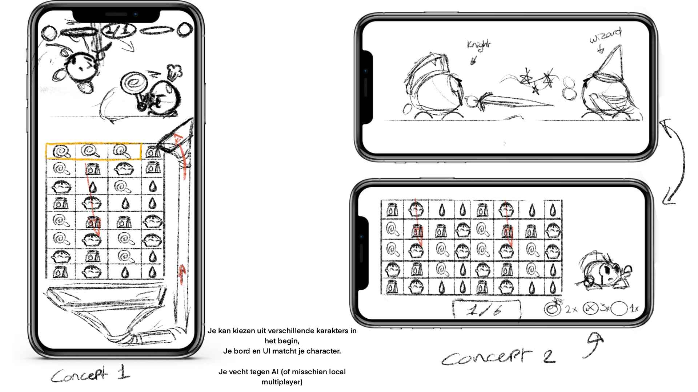
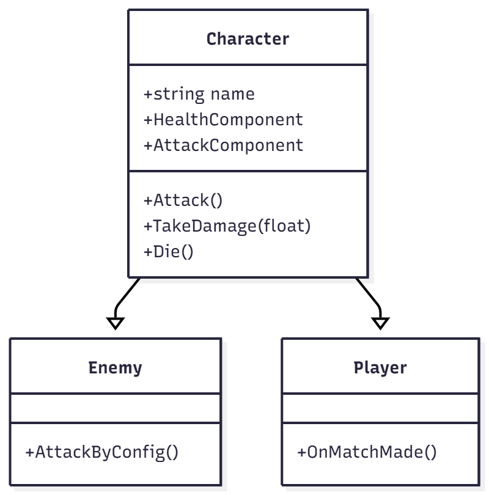
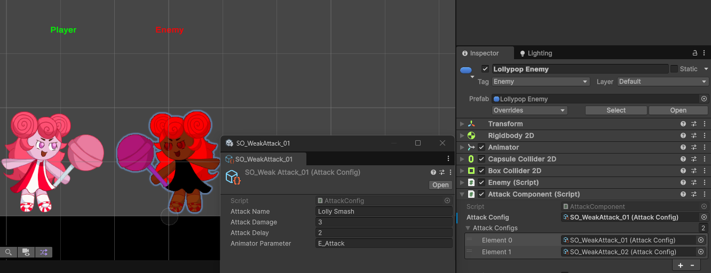
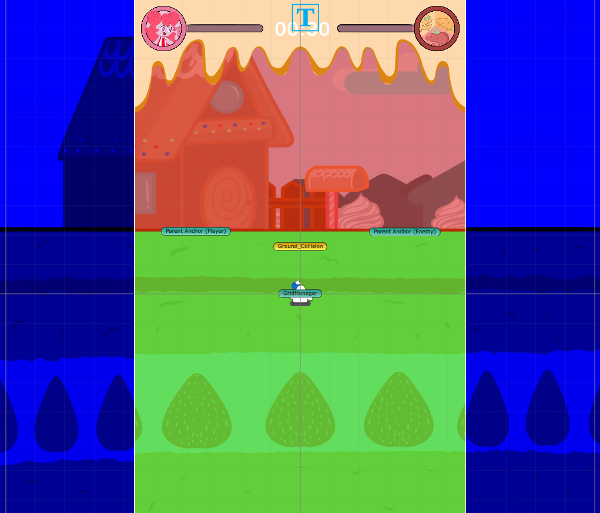
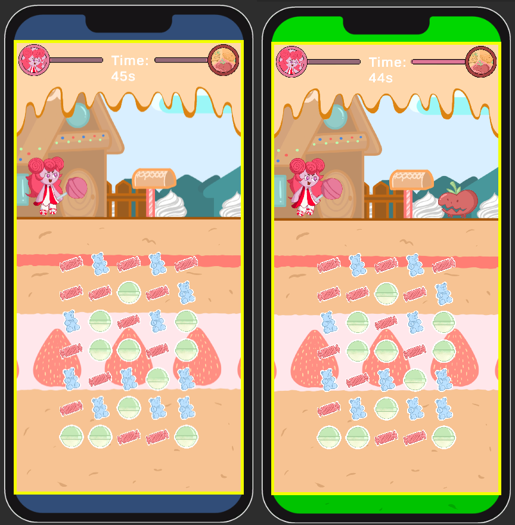

Candy Dandy was our final exam project at Mediacollege, created in collaboration with a real client. The goal: develop a match-3 mobile game where matching tiles directly fuels a secondary fighting gameplay layer. View on GitHub
Builds are available for Android and Windows. Since the game was designed for portrait mobile, expect stretched visuals on PC.
Gameplay showcase (starts at ~2:08)
The project began with three external client pitches. After securing our first choice, we brainstormed concepts. Options ranged from a dating sim to a cake-baking sim, but we pushed for a fighting game with match-3 integration. Early mockups helped us and the client decide on a portrait layout to balance scope and usability.

Concept 1: Portrait — matching and fighting combined.
Concept 2: Landscape — matching with cutscene transitions.
All characters (player and enemies) derive from a shared base class handling variables, components, and core functions. Character System

Combat was built around AttackConfig ScriptableObjects, defining data like damage, animation, and delay. This gave designers flexibility while keeping the system modular. Attack System

Attack setup via ScriptableObjects, tweakable directly in the Inspector.
A major challenge was scaling across devices. Using Unity’s Canvas Scaler and a custom Safe Area Handler, I ensured UI panels adapt to notches, rounded corners, tablets, and Android soft keys. This made the game consistently playable across a wide range of devices.

Debug overlay used to visualize and adjust safe areas during setup.

The safe area initially cropped the game view, leaving empty borders on taller screens. I fixed this by extending and mirroring background art to fill the space naturally.
Sprint 2: gameplay after scaling fixes, verified across multiple device sizes.
Candy Dandy taught me how to adapt UI for mobile screens and implement Safe Area handling — skills praised by our client as invaluable for future projects. I also deepened my experience in character systems, combat mechanics, and technical art integration. Most importantly, I learned to balance technical and artistic collaboration while working with a real client and a cross-discipline team.
Final presentation: VFX integration and technical animation support. VFX System